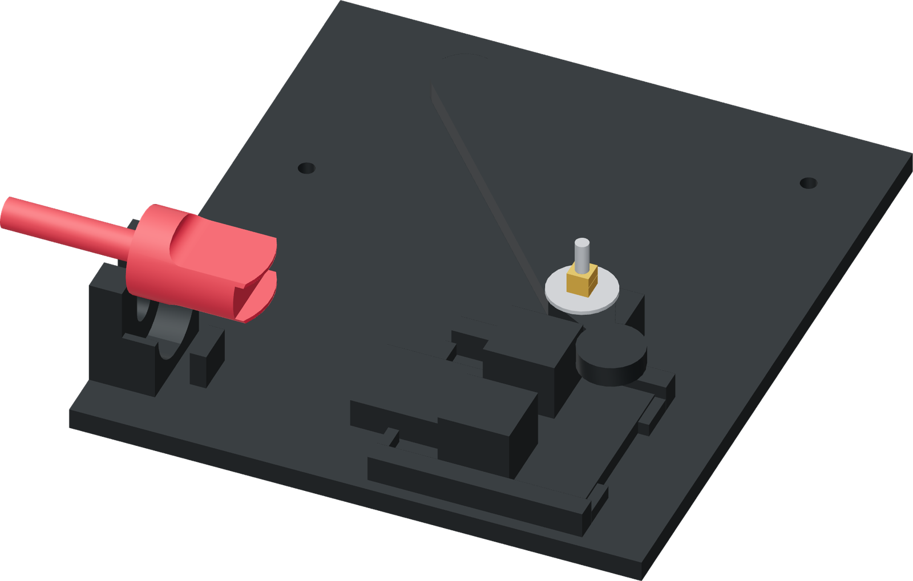

Place the donor in the nest
The horizontal fixture supports the robust cylindrical metal base. The attached faucet lever remains in the open front-side clearance.

- Lay the bare Touch-Flo in the nest with its cylindrical base in the saddle and its flat bottom annulus against the thrust wall.
- Let its threaded shank pass through the open notch. Rest the flat metal column on the clocking pad so the empty top port aligns with the tube axis.
- Keep the attached faucet lever down at unpressed rest in the open side facing you. The fixture must touch neither the lever nor the valve plunger.
Finished when
The metal body rests against the thrust wall, the shank is clear and the unpressed faucet lever has open clearance.